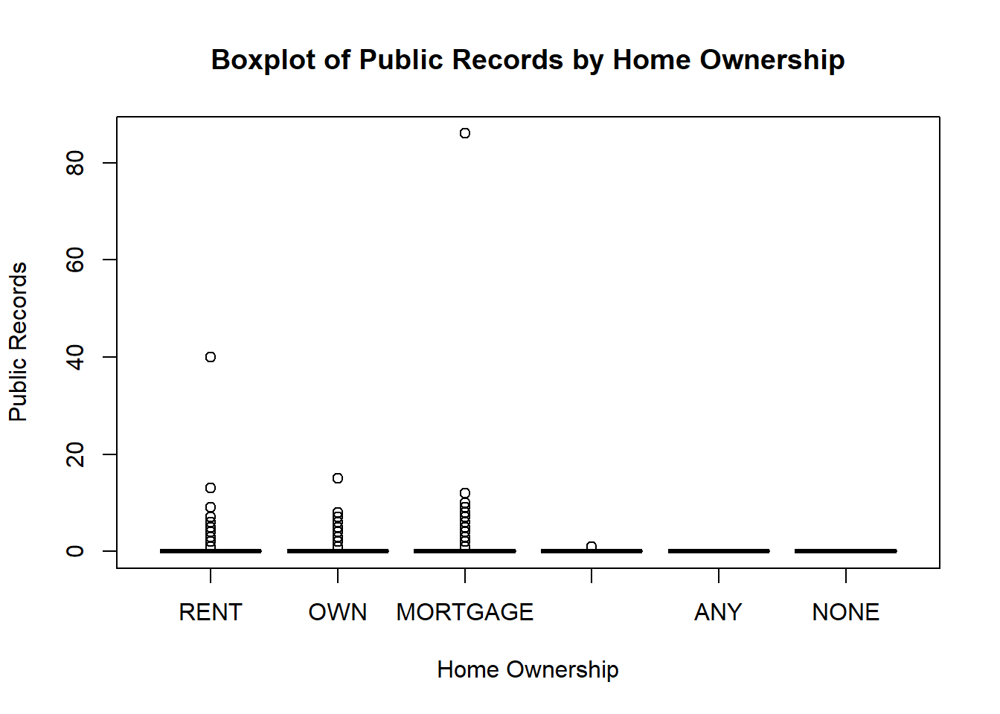
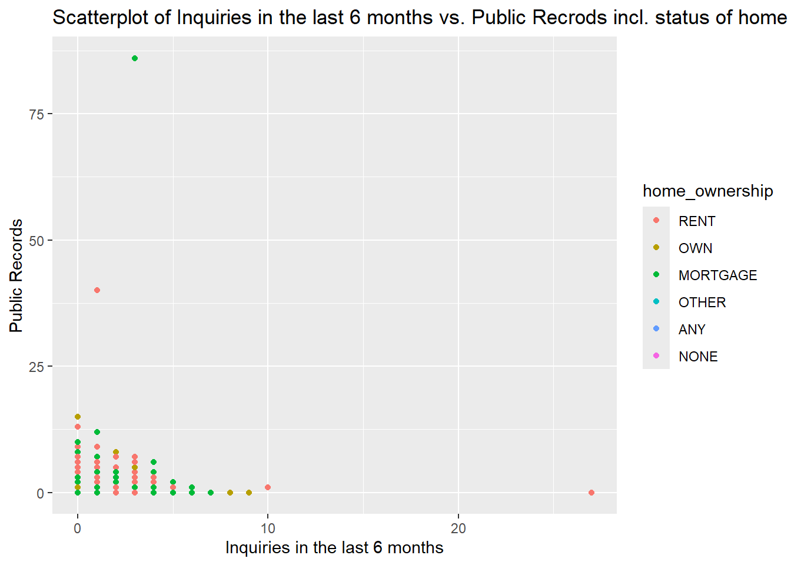

#install.packages("quarto")
#install.packages("data.table")
#install.packages("dplyr")
library(data.table)
library(dplyr)
library(quarto)
library(ggplot2)
library(skimr)
library(GGally)
library(knitr)
LCdata <- fread("LCdata.csv")
set.seed(6)
myLCdata <- LCdata %>% sample(5) %>% slice_sample(prop = .5)P1-6-Haeusler
Preliminaries
Task 1
Task Description
Use dplyr::glimpse() and str() to get a first impression of your data set. Download the data dictionary from Moodle, find the attributes that are present in your data set myLCdata and read the corresponding descriptions. Try to understand their meaning in the context of peer-to-peer (P2P) loans.
# Get a glimpse of the dataset
glimpse(myLCdata)Rows: 44,369
Columns: 5
$ inq_last_6mths <int> 0, 1, 0, 2, 0, 4, 1, 0, 0, 0, 0, 0, 1, 0, 2, 1, 0, 0, 1…
$ pub_rec <int> 0, 0, 0, 0, 2, 0, 0, 0, 1, 0, 0, 0, 1, 2, 0, 0, 0, 0, 0…
$ revol_bal <int> 474, 41023, 16683, 15080, 17747, 84447, 6489, 46750, 26…
$ dti <dbl> 10.43, 15.73, 12.37, 19.64, 14.06, 39.16, 13.79, 9.09, …
$ home_ownership <chr> "RENT", "RENT", "RENT", "MORTGAGE", "MORTGAGE", "RENT",…# Use str() function to get structure of the dataset
str(myLCdata)Classes 'data.table' and 'data.frame': 44369 obs. of 5 variables:
$ inq_last_6mths: int 0 1 0 2 0 4 1 0 0 0 ...
$ pub_rec : int 0 0 0 0 2 0 0 0 1 0 ...
$ revol_bal : int 474 41023 16683 15080 17747 84447 6489 46750 2695 14157 ...
$ dti : num 10.4 15.7 12.4 19.6 14.1 ...
$ home_ownership: chr "RENT" "RENT" "RENT" "MORTGAGE" ...| Variable | Description | Meaning for P2P Loans |
|---|---|---|
| inq_last_6mths | The number of inquiries in past 6 months (excluding auto and mortgage inquiries) | The number of inquiries helps the lender to evaluate the credit worthiness and credit trustiness of the borrower (e.g. may indicate overspending –> risk of credit default) |
| pub_rec | Number of derogatory public records | The number of derogatory public records helps the lender to assess the credit worthiness of the borrower. Furthermore, public records may be used for risk and compliance assessment of the borrower. |
| revol_bal | Total credit revolving balance. A revolving credit is a credit line that remains available even as you pay the balance. Borrowers can access credit up to a certain amount and then have ongoing access to that amount of credit. Typically a credit card |
Revolving balance have to be considered in the creditworthiness assessment. The credit line has to be considered in the debit utilization ratio which influences the risk evaluation of the loan and therefore directly impacts the interest rate. Moreover, the credit revolving balance can help to understand the financial stability of the borrower. |
| dti | A ratio calculated using the borrower’s total monthly debt payments on the total debt obligations (excluding mortgage and the requested LC loan), divided by the borrower’s self-reported monthly income. | The dti is a measurement that helps lenders to assess the borrower’s ability to manage their debt payment relative to their income. It provides a measure of the borrower’s financial health and ability to repay their loan. |
| home_ownership | The home ownership status provided by the borrower during registration. Our values are: RENT, OWN, MORTGAGE, OTHER. | The home ownership status can provide insights into the financial stability and responsibility of the borrower. |
Task 2
Task Description
Use summary() and skimr::skim() to review the main statistical metrics of your attributes. What do they tell you about the attributes? Interpret them not only statistically, but also in the domain context.
# Review main statistical metrics using summary()
summary(myLCdata) inq_last_6mths pub_rec revol_bal dti
Min. : 0.0000 Min. : 0.0000 Min. : 0 Min. : 0.00
1st Qu.: 0.0000 1st Qu.: 0.0000 1st Qu.: 6472 1st Qu.:11.91
Median : 0.0000 Median : 0.0000 Median : 11921 Median :17.61
Mean : 0.6965 Mean : 0.1973 Mean : 16880 Mean :18.14
3rd Qu.: 1.0000 3rd Qu.: 0.0000 3rd Qu.: 20772 3rd Qu.:23.95
Max. :27.0000 Max. :86.0000 Max. :1630818 Max. :64.50
NA's :2 NA's :2
home_ownership
Length:44369
Class :character
Mode :character
# Review main statistical metrics using skim()
skim(myLCdata)Table 1: Summary statistics for characters and numeric variables
| Name | myLCdata |
| Number of rows | 44369 |
| Number of columns | 5 |
| Key | NULL |
| _______________________ | |
| Column type frequency: | |
| character | 1 |
| numeric | 4 |
| ________________________ | |
| Group variables | None |
Variable type: character
| skim_variable | n_missing | complete_rate | min | max | empty | n_unique | whitespace |
|---|---|---|---|---|---|---|---|
| home_ownership | 0 | 1 | 3 | 8 | 0 | 6 | 0 |
Variable type: numeric
| skim_variable | n_missing | complete_rate | mean | sd | p0 | p25 | p50 | p75 | p100 | hist |
|---|---|---|---|---|---|---|---|---|---|---|
| inq_last_6mths | 2 | 1 | 0.70 | 1.00 | 0 | 0.00 | 0.00 | 1.00 | 27.0 | ▇▁▁▁▁ |
| pub_rec | 2 | 1 | 0.20 | 0.71 | 0 | 0.00 | 0.00 | 0.00 | 86.0 | ▇▁▁▁▁ |
| revol_bal | 0 | 1 | 16879.65 | 22143.45 | 0 | 6472.00 | 11921.00 | 20772.00 | 1630818.0 | ▇▁▁▁▁ |
| dti | 0 | 1 | 18.14 | 8.32 | 0 | 11.91 | 17.61 | 23.95 | 64.5 | ▅▇▃▁▁ |
Analysis
inq_last_6mths
With the mean being at 0.6965 for the number of inquiries in the last 6 months, it is to assume that the majority requests a loan for the first time in the last 6 months. Considering the median of 0.00 and the maximum value of 27, it is to say that the distribution is right-skewed. Furthermore to highlight is the aspect, that 75% of the loan request in the last 6 months are either their first or second request. For two observations, the number of inquiries in the last 6 months are missing. However, this small number does not hinder the analysis of the data set. The number of inquiries may give an indication on how urgent the requester needs the credit and may indicate financial difficulties of the requester. As for example the observation with 27 counts of inquires in the last 6 months would lead to believe, that the requester is in a more financial turbulence than the one with a first time request.
pub_rec
For the number of public records, it is interesting to see that 75% of the observation have no registered public records (3rd quantile is at 0). With the mean being at 0.1973 and the maximum at 86.00, the distribution of the number of public records seems to be right-skewed. The observation with a number of public records of 86 can probably be considered as an outlier. For two observations, the number of inquiries in the last 6 months are missing. However, the small number seems not to be relevant for the further analysis of the data set. People with either a high number of public records or a severe entry in the public records may not receive credits from financial institute due to compliance reasons. For people with no public records, a credit taken out from the lending club could be more interesting in regard to the interest rate.
revol_bal
For the attribute revolving balance, as the median is smaller as the mean, it can be said that it is right-skewed as well. The maximum amount of 1’630’818 seems to be a very high amount with the second highest amount being at 952’013. It may seem that those high values are outliers. However, it is essential to further analyse these observation and to determine, if these are erroneous input or not.
dti
As the other previous mentioned values, the attribute debt-to-income seems to be right-skewed as well as the median is smaller than the mean and the maximum value is at 64.50. With the 3rd quantile being at 23.95, the majority of the observation have debt-to-income ratio below 25%. As mortgages and the requested LC loan is not considered in this calculation, it is difficult to assess the real “credit risk” of the observation as their financial obligation may be much higher than expected.
home_ownership
As the attribute home_ownership is categorical, the calculation of a mean, median etc. is not possible. The attribute home ownership may give an indication about the financial stability and back ups of the requester. An exploration of the distribution will be done in the further steps with an histogram. Additionally, you will find the an insight of the distribution of this attribute in the following section “Further Exploration”. 50% of the observation have a mortgage on their own property and almost 40% are currently renting. As owning a property and renting a property are the most common living situation nowadays, the data set seems not to be unbalanced. Furthermore, as neither mortgage payments as well as the rent payments are considered in the debt-to-income ratio, this attribute may get a further insight on the financial obligation of the requester. Additionally, as can be seen in the further exploration, for the attribute home_ownership, two additional variables, “NONE”and “ANY”, appear in the data set. These two are not mentioned in the description of the attribute.
Further Exploration
# Get unique values of home_ownership
unique_values <- unique(myLCdata$home_ownership)
# Initialize an empty data frame to store the results
result_df <- data.frame(Home_Ownership = character(), Count = integer(), Percentage = numeric(), stringsAsFactors = FALSE)
# Loop through each unique value
for (value in unique_values) {
# Count occurrences of the value
count <- sum(myLCdata$home_ownership == value)
# Calculate percentage and round to two decimal places
percentage <- round((count / nrow(myLCdata)) * 100, 2)
# Append to the result data frame
result_df <- rbind(result_df, data.frame(Home_Ownership = value, Count = count, Percentage = percentage))
}
# Print the result data frame
print(result_df) Home_Ownership Count Percentage
1 RENT 17697 39.89
2 MORTGAGE 22272 50.20
3 OTHER 14 0.03
4 OWN 4382 9.88
5 NONE 3 0.01
6 ANY 1 0.00Task 3
Task Description:
Choose at least one suitable diagram type (e.g. a histogram, a scatterplot) for each of the 5 attributes in your data set and visualize it using ggplot2. Give your plots a professional look (e.g., add a title, make the axes labels readable, add the measurement units if available).
Interpret each of your plots:
• What information can you read off the diagram type you chose (e.g. in a histogram you can read off range, distribution, etc.)?
• What does it tell you about the attribute in the context of the attribute semantic and domain? Does it confirm your first assumptions about the attribute from task 2?
Analysis
# Set the xlim range
xlim_range <- c(0, 8)
# Subset the data to count the number of values outside the xlim range
values_outside_range <- myLCdata$inq_last_6m[myLCdata$inq_last_6m < xlim_range[1] | myLCdata$inq_last_6m > xlim_range[2]]
# Calculate the number of values outside the xlim range
num_outside_range <- length(values_outside_range)
# Create the histogram with the specified xlim range
hist(myLCdata$inq_last_6m,
main = "Histogram of Inquiries in Last 6 Months",
xlab = "Number of Inquiries",
ylab = "Frequency",
col = "skyblue",
border = "black",
xlim = xlim_range,
sub = paste("Number of values outside xlim range:", num_outside_range))inq_last_6mths
For the number of inquiries in the last 6 months, the assumption done in task 2 can be confirmed as the majority of observations lies between 0 up to 2 inquiries. Only a small number of observation have more than 2 inquiries in the last 6 months. As the range of the number of inquires has been limited to 8, 7 observations are not visualized in the histogram. Figure 1 may indicate that either the first or second inquiry is successful and therefore, not an additional one is done. Or, that the majority of people who are interested in a loan form LC consider other financing possibilities after 2 denied requests.
# Calculate the number of missing values in pub_rec
num_missing <- sum(is.na(myLCdata$pub_rec))
# Calculate the number of values exceeding the limit
num_exceeding_limit <- sum(myLCdata$pub_rec > 9, na.rm = TRUE)
# Create a frequency distribution with binwidth=1 for pub_rec
ggplot(myLCdata, aes(x = pub_rec)) +
geom_histogram(binwidth = 1, fill = "skyblue", color = "black", na.rm = TRUE) +
labs(title = "Frequency Distribution of Public Records",
x = "Number of Public Records",
y = "Frequency",
subtitle = paste("Number of missing values:", num_missing,
"\nNumber of values outside X range:", num_exceeding_limit)) +
scale_x_continuous(limits = c(-1, 9), breaks = seq(0, 9, by = 1)) +
# coord_cartesian(ylim = c(0, 7500))+
theme_minimal()pub_rec
For the number of public records, the analysis conducted in task 2 can be confirmed as well the majority of the observation has no public records. Furthermore, a much smaller number of observations have 1 public record and a even smaller number have more than 2 public records. For the visualization, the number of pubic records display have been limited to 9. This leads to 6 observation not being visualized. Figure 2 supports the assumptions that especially law-abiding people are requesting loans at the Lenders Club. This may be influenced by the fact, that borrowers with no or a small number of public records, probably depending as well on which entry, receive an interesting interest rate. Furthermore, lenders may be more willing to lend their money to someone with a low number of public records.
# Calculate the number of values exceeding the limit
num_exceeding_limit_revolbal <- sum(myLCdata$revol_bal > 300000)
# Create a histogram for revol_bal
hist(myLCdata$revol_bal,
main = "Histogram of total credit revolving balance",
xlab = "Total credit revolving balance",
ylab = "Frequency",
col = "skyblue",
border = "black",
xlim = c(0, 300000),
sub = paste("Number of values outside X range:", num_exceeding_limit_revolbal))revol_bal
For the visualization of the credit revolving balance, the amount of balances has been limited to USD 300’000, leading to 19 observation not being displayed. The assumption of a right-skewed distribution seems to be correct. Additionally, it is visible that the majority of observation have a revolving balance between USD 0 and USD 100’000. You may interpret the result that observation with an revolving balance over USD 100’000 are not ordinary.
# Create a histogram for dti
hist(myLCdata$dti,
main = "Histogram of Debt-to-Income Ratio (dti)",
xlab = "Debt-to-Income Ratio (dti)",
ylab = "Frequency",
col = "skyblue",
border = "black")# Create a boxplot for dti
boxplot(myLCdata$dti,
main = "Boxplot of Debt-to-Income Ratio (dti)",
ylab = "Debt-to-Income Ratio (dti)")dti
The box plot diagram confirms the calculated median of 18.14 from Task 2. Furthermore, you can well see 4 outlier observations which are depicted as dots in Figure 5. Additionally, in Figure 4, the main observations have a debt-to-income ratio between 0 to 40 . Between those two numbers, the distribution looks similar to an univariate distribution.
# Convert home_ownership to factor
myLCdata$home_ownership <- factor(myLCdata$home_ownership, levels = c("RENT", "OWN", "MORTGAGE", "OTHER", "ANY", "NONE"))
# Compute the frequency count of each category
frequency <- table(myLCdata$home_ownership)
# Create a bar plot for home_ownership
bp <- barplot(frequency,
main = "Frequency of Home Ownership",
xlab = "Home Ownership",
ylab = "Frequency",
col = "skyblue",
ylim = c(0, max(frequency) * 1.2)) # Adjust the y-axis limit
# Add text labels for numeric values
text(x = bp,
y = frequency + 1,
labels = frequency,
pos = 3, cex = 0.8, col = "black")home_ownership
The histogram of the variable “home_ownership” confirms the calculated distribution in percentage of Task 2. The two categories “Mortgage” and “Rent” are the most common ones, which are as well the most common living situation in considering today’s society.
Task 4
Task Description:
In task 3, you looked at each variable separately. Now the goal is to see if there are some obvious correlations or patterns when looking at pairs of variables.
myLCdata_clean <- na.omit(myLCdata[, c("inq_last_6mths", "pub_rec", "revol_bal", "dti", "home_ownership")])
#ggpairs(myLCdata_clean)
suppressMessages({
ggpairs(myLCdata_clean[, c("inq_last_6mths", "pub_rec", "revol_bal", "dti", "home_ownership")])
})As I couldn’t find a visible correlation in the previously produced Figure, Figure 7, I tried to calculate the correlation of each set of two variables in the following code.
# Get the names of numeric columns
numeric_columns <- names(myLCdata)[sapply(myLCdata, is.numeric)]
# Subset myLCdata using the numeric column names
numeric_data <- myLCdata[, ..numeric_columns]
# Remove missing values
numeric_data_noNA <- na.omit(numeric_data)
# Convert data frame to matrix-like object
numeric_matrix <- as.matrix(numeric_data_noNA)
# Calculate correlation matrix
correlation_matrix <- cor(numeric_matrix)
# Convert correlation matrix to data frame
correlation_df <- as.data.frame(correlation_matrix)
# Print the correlation matrix as a table
kable(correlation_df, caption = "Correlation Matrix")| inq_last_6mths | pub_rec | revol_bal | dti | |
|---|---|---|---|---|
| inq_last_6mths | 1.0000000 | 0.0494919 | -0.0081095 | -0.0134143 |
| pub_rec | 0.0494919 | 1.0000000 | -0.0876492 | -0.0351558 |
| revol_bal | -0.0081095 | -0.0876492 | 1.0000000 | 0.1411285 |
| dti | -0.0134143 | -0.0351558 | 0.1411285 | 1.0000000 |
After further clarification with Gwen, I decided to further investigate the relationship of the two variables revol_bal and home_ownership, as can be seen in Figure 8. Before running the code, I expected to see a difference between home owners, either with or without mortgage, and people who are currently renting. I expected this result as I thought that home owners either have invested their assets in their homes and / or have more financial obligations due to mortgage payments, both leading to a more stressed financial situation.
# Create a box plot of revol_bal grouped by home_ownership
boxplot(revol_bal ~ home_ownership, data = myLCdata,
main = "Boxplot of Revolving Balance by Home Ownership",
xlab = "Home Ownership",
ylab = "Revolving Balance",
col = "skyblue")Considering Figure 8, a small difference between people owning a property, either with or without mortgage, and people who are renting can be seen. Furthermore, the observations with the home ownership status “Mortgage” tend to have a higher Revolving Balance. This may be due to more financial obligations due to the mortgage payment. Therefore, people may request a higher revolving balance (resp. a higher credit card limit) so they are able to pay their daily bills.
In the next step, I wanted to analysis if there is a visible difference between the home ownership status and the number of public records. My first assumption is that people who live in their own property have a smaller number of public record entries as they may have more stability in their life.
# Create a box plot of revol_bal grouped by home_ownership
boxplot(pub_rec ~ home_ownership, data = myLCdata,
main = "Boxplot of Public Records by Home Ownership",
xlab = "Home Ownership",
ylab = "Public Records",
col = "skyblue")
# Create a box plot of pub_rec grouped by home_ownership
boxplot(pub_rec ~ home_ownership, data = myLCdata,
main = "Boxplot of Public Records by Home Ownership",
xlab = "Home Ownership",
ylab = "Public Records",
col = "skyblue",
ylim = c(0, 40))
However, as shown in Figure 9 and Figure 10, no significant difference can be detected. Only the number of the outliers may differ. However, as outliers are observation which vary greatly from the other observations, these points will not be considered for comparison.
Additionally, I wanted to further explore the relationship between the two attributes debt-to-income and revolving balance. As described in task 1, dti considers the total monthly debt payments on the total debt obligations in its calculation. However, as described in the LC Data Dictionary, the revolving balance is typically the credit card. As the payment system in the US varies from the one in Switzerland, it is difficult to understand how the “open” revolving balance would be considered in the debt-to-income ratio. In my understanding, people with a high income are more likely to get a high revolving balance granted. Nonetheless, the debt-to-income ratio should be remain in the same range.
# Calculate the correlation between revol_bal and dti
correlation <- cor(myLCdata$revol_bal, myLCdata$dti)
# Create a scatterplot of dti against revol_bal
plot(myLCdata$dti, myLCdata$revol_bal,
main = "Scatterplot of Debt-to-Income Ratio vs. Revolving Balance",
sub = paste("Correlation =", round(correlation, 2)),
xlab = "Debt-to-Income Ratio",
ylab = "Revolving Balance",
col = "blue")
# Add correlation coefficient to the plot
text(x = min(myLCdata$dti),
y = max(myLCdata$revol_bal),
labels = paste("Correlation =", round(correlation, 2)),
pos = 4, cex = 0.8, col = "black")# Calculate the correlation between revol_bal and dti
correlation <- cor(myLCdata$revol_bal, myLCdata$dti)
# Create a scatterplot of dti against revol_bal
plot(myLCdata$dti, myLCdata$revol_bal,
main = "Scatterplot of Debt-to-Income Ratio vs. Revolving Balance",
sub = paste("Correlation =", round(correlation, 2)),
xlab = "Debt-to-Income Ratio",
ylab = "Revolving Balance",
col = "blue",
ylim = c(0, 200000))
# Add correlation coefficient to the plot
text(x = min(myLCdata$dti),
y = max(myLCdata$revol_bal),
labels = paste("Correlation =", round(correlation, 2)),
pos = 4, cex = 0.8, col = "black")As can be seen in Figure 11 as well in Figure 12, it looks like the amount of the revolving balance seems is limited to a 40% Debt-to-Income Ratio. Only four observations have been done outside the mentioned 40% limit. As I do not have the data on the income, the analysis of the relationship between the income and the height of the revolving balance cannot be done. However, it can be said that in all cases, besides the outliers, the revolving balance seems to be limited to 40% debt-to-income ratio.
In a further step, I wanted to investigate, if any further insights could be gained by adding the attribute home_ownership in the visualization of the attributes revol_bal and dti. As already known from Figure 8, home owners with a mortgage tend to have a higher revolving balance. Considering that factor, I would expect that the debt-to-income ratio for home owners with a mortgage would be higher than the one for the observations with the home owner status “Rent”.
# Calculate the correlation between revol_bal and dti
correlation <- cor(myLCdata$revol_bal, myLCdata$dti)
# Create a scatterplot of dti against revol_bal with home_ownership as color
ggplot(myLCdata, aes(x = dti, y = revol_bal, color = home_ownership)) +
geom_point() +
labs(title = "Scatterplot of Debt-to-Income Ratio vs. Revolving Balance",
subtitle = paste("Correlation =", round(correlation, 2)),
x = "Debt-to-Income Ratio",
y = "Revolving Balance")In Figure 13, observations with the home owner status “Mortgage” have in general a higher revolving balance than observation with the home owner status “Rent”. This disparity could be due to the increased financial obligations associated with mortgage payments. Depending on the time frame in which the data was collected, this may indicate a trend for home owners with mortgages to maintain a higher revolving balance to cover their daily expenses. However, no further insights can be gained by considering the attribute debt-to income-ratio. Additionally, observations with the home owner status “Own” seems to be more distributed and therefore, it is more difficult to recognize a trend.
Further Exploration
# Exclude rows with missing values in dti and inq_last_6mths
complete_cases <- complete.cases(myLCdata$dti, myLCdata$inq_last_6mths)
dti <- myLCdata$dti[complete_cases]
inq_last_6mths <- myLCdata$inq_last_6mths[complete_cases]
# Calculate the correlation between dti and inq_last_6mths
correlation_3 <- cor(dti, inq_last_6mths)
# Create a scatterplot of dti against inq_last_6mths
plot(inq_last_6mths, dti,
main = "Scatterplot of Debt-to-Income Ratio vs. Inquiries in Last 6 Months",
sub = paste("Correlation =", round(correlation_3, 2)),
xlab = "Inquiries in Last 6 Months",
ylab = "Debt-to-Income Ratio",
col = "blue")# Exclude rows with missing values in inq_last_6mths and pub_rec
complete_cases <- complete.cases(myLCdata$inq_last_6mths, myLCdata$pub_rec)
inq_last_6mths <- myLCdata$inq_last_6mths[complete_cases]
pub_rec <- myLCdata$pub_rec[complete_cases]
# Calculate the correlation between inq_last_6mths and pub_rec
correlation_2 <- cor(inq_last_6mths, pub_rec)
# Create a scatterplot of pub_rec against inq_last_6mths
plot(inq_last_6mths, pub_rec,
main = "Scatterplot of Inquiries in Last 6 Months vs. Public Records",
sub = paste("Correlation =", round(correlation_2, 2)),
xlab = "Inquiries in Last 6 Months",
ylab = "Public Records",
col = "blue")# Calculate the correlation between pub_rec and dti
correlation <- cor(myLCdata$pub_rec, myLCdata$inq_last_6mths)
# Create a scatterplot of inq_last_6mths against pub_rec with home_ownership as color
ggplot(myLCdata, aes(x = inq_last_6mths, y = pub_rec, color = home_ownership)) +
geom_point() +
labs(title = "Scatterplot of Inquiries in the last 6 months vs. Public Recrods incl. status of home ownership ",
subtitle = paste("Correlation =", round(correlation, 2)),
x = "Inquiries in the last 6 months",
y = "Public Records")
# Calculate the correlation between pub_rec and dti
correlation <- cor(myLCdata$pub_rec, myLCdata$inq_last_6mths)
# Create a scatterplot of inq_last_6mths against pub_rec with home_ownership as color
ggplot(myLCdata, aes(x = inq_last_6mths, y = pub_rec, color = home_ownership)) +
geom_point() +
labs(title = "Scatterplot of Inquiries in the last 6 months vs. Public Recrods incl. status of home ownership ",
subtitle = paste("Correlation =", round(correlation, 2)),
x = "Inquiries in the last 6 months",
y = "Public Records") +
scale_x_continuous(limits = c(0, 15)) +
scale_y_continuous(limits = c(0, 20))